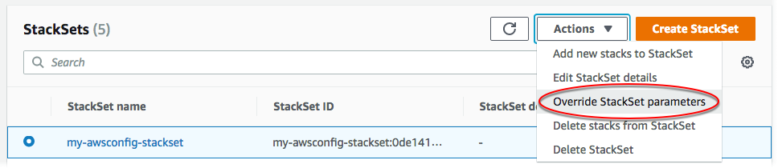

스택 인스턴스의 파라미터 재정의
특정 리전이나 계정에서 스텍 세트에 지정한 속성 값과 다른 값을 갖는 스택 인스턴스를 원할 수도 있습니다. 예를 들어, 계정을 개발이나 생산에 사용할지 여부에 따라 특정 파라미터의 값을 다르게 지정하고 싶을 수 있습니다. 이 경우, AWS CloudFormation을 통해 계정과 리전별로 스택 인스턴스의 파라미터 값을 재정의할 수 있습니다. 스택 인스턴스를 처음 만들 때 템플릿 파라미터 값을 재정의할 수 있고, 기존 스택 인스턴스의 파라미터 값을 재정의할 수 있습니다. 이전에 스택 인스턴스에서 재정의한 파라미터만 스택 세트의 지정 값으로 재설정할 수 있습니다.
선택한 계정과 리전의 스택 인스턴스에 파라미터 값 재정의를 적용합니다. 스택 세트 업데이트 동안, 스택 인스턴스에 대해 재정의된 파라미터 값은 업데이트되지 않고, 재정의된 값이 유지됩니다.
스택 세트에서 지정한 파라미터 값만 재정의할 수 있습니다. 파라미터 자체를 추가 또는 삭제하려면 스택 세트 템플릿을 업데이트해야 합니다. 스택 세트 템플릿에 파라미터를 추가하려면, 스택 세트에서 지정한 새로운 파라미터와 값으로 모든 스택 인스턴스를 먼저 업데이트해야 스택 인스턴스의 해당 파라미터 값을 재정의 할 수 있습니다. 새 파라미터로 모든 스택 인스턴스를 업데이트 한 후에는 원하는 대로 개별 스택 인스턴스의 파라미터 값을 재정의 할 수 있습니다.
스택 인스턴스를 생성할 때 스택 세트 파라미터 값을 재정의하는 방법은 스택 세트에 스택 추가를 참조하십시오.
AWS Management Console을 사용하여 스택 인스턴스의 파라미터 재정의
AWS CloudFormation 콘솔(https://console.aws.amazon.com/cloudformation
)을 엽니다. -
탐색 창에서 스택 세트를 선택합니다. StackSets 페이지에서 스택 세트 생성에서 생성한 스택 세트를 선택합니다. 이 연습에서
my-awsconfig-stackset라는 스택 세트를 생성했습니다. -
스택 세트를 선택한 상태에서 Actions(작업) 메뉴에서 Override StackSet parameters(스택 세트 파라미터 재정의)를 선택합니다.
 -
배포 옵션 설정 페이지에서 파라미터를 재정의하려는 스택 인스턴스의 계정 및 리전을 입력하십시오.
리전의 배포 실패가 지정된 내결함성을 초과하지 않으면 AWS CloudFormation은 첫 번째 리전의 지정된 계정에 스택을 배포한 후 다음으로 이동하는 식의 과정을 계속합니다.
-
[자체 관리형 권한] 배포 대상의 경우 계정에 스택 배포를 선택합니다. 스택 세트 생성에서 스택 세트를 생성하기 위해 사용한 계정 ID 모두 또는 일부를 붙여 넣습니다.
[서비스 관리형 권한] 배포 대상의 경우 조직 내 배포 대상 계정을 선택합니다.
-
Deployment regions(배포 리전)의 경우, 이 스택 세트에 대한 스택 인스턴스를 배포한 리전을 하나 이상 추가하십시오.
여러 리전을 추가하면 Specify regions(리전 지정) 아래의 리전 순서에 따라 배포 순서가 결정됩니다.
-
Deployment options(배포 옵션)의 경우:
-
Maximum concurrent accounts(최대 동시 계정)의 경우 번호 및 1의 기본값을 유지하십시오.
즉, AWS CloudFormation은 한 번에 한 계정에서만 스택을 배포합니다.
-
Failure tolerance(내결함성)의 경우, 번호 및 0의 기본값을 유지하십시오.
즉, AWS CloudFormation이 현재 리전에서 배포를 중단하고 나머지 리전에서 배포를 취소하기 전에 지정된 리전 중 하나에서 최대 하나의 스택 배포가 실패할 수 있습니다.
다음을 선택합니다.
-
-
-
Specify Overrides(재정의 지정) 페이지에서 Frequency(빈도) 파라미터를 확인한 다음 Edit override value(스택 세트 값 편집) 메뉴에서 Override StackSet value(StackSet 값 재정의)를 선택합니다.

-
Override StackSet parameter values(StackSet 파라미터 값 재정의)에서 Frequency(빈도) 파라미터에 대해 6hours(6시간)를 선택하고 Save changes(변경 사항 저장)를 선택합니다. AWS CloudFormation이 빈도 파라미터 값을 재정의하고, 지정 리전과 지정 계정의 모든 스택 인스턴스에 6시간을 사용하도록 명령했습니다. 다음을 선택합니다.
참고
재정의한 파라미터에 스택 세트에서 지정한 값을 사용하려면 모든 파라미터를 선택하고 Edit override value(재정의 값 편집) 메뉴에서 Set to StackSet value(스택 세트 값으로 설정)를 선택합니다. 이렇게 하면 스택 인스턴스를 업데이트한 후 모든 재정의 값이 제거됩니다.
-
[검토] 페이지에서 선택 사항을 검토합니다. 빈도 파라미터는 Override value(재정의 값) 열에 값을 표시하여 스택 수준에서 해당 값이 재정의되었음을 나타냅니다.
이러한 스택 인스턴스의 파라미터를 재정의하려면 기능 영역의 확인란을 선택하여 스택 세트로 생성하는 리소스에 새 IAM 리소스와 권한이 필요할 수 있음을 나타내야 합니다. 잠재적으로 필요한 권한에 대한 자세한 내용을 알아보려면 이 설명서의 AWS CloudFormation 템플릿에서 IAM 리소스 승인을 참조하세요. 준비가 되면 Submit(제출)을 선택합니다.
-
AWS CloudFormation이 스택 인스턴스를 업데이트하기 시작합니다. 제출을 선택하면 열리는 스택 세트 세부 정보 페이지에서 스택 인스턴스의 진행률 및 상태를 봅니다.
AWS CLI을 사용하여 스택 인스턴스의 파라미터 재정의
위임된 관리자 역할을 수행할 때는 StackSets 명령을 실행할 때마다 --call-as 파라미터를 DELEGATED_ADMIN으로 설정해야 합니다.
--call-asDELEGATED_ADMIN
--parameter-overrides를 지정하여 update-stack-instances AWS CLI 명령을 실행합니다. --parameter-overrides 지정에 대한 자세한 내용은 AWS CloudFormation API 참조의 Parameter 섹션 및 AWS CLI 명령 참조의 update-stack-instances 섹션을 참조하세요.
여기에 나온 예제 명령에서는 지정된 스택 인스턴스에 대해 전송 채널 구성의 기본 스냅샷 전송 빈도를 TwentyFour_Hours에서 Twelve_Hours로 변경합니다.
-
다음 명령을 실행합니다.
--stack-set-name에 대해 스택 세트 이름my-awsconfig-stackset을 지정합니다.다음 예제와 같이
FailureToleranceCount파라미터에서0를MaxConcurrentCount으로 설정하고1를--operation-preferences로 설정하여 내결함성 및 최대 동시 계정을 설정합니다.FailureTolerancePercentage또는MaxConcurrentPercentage를 사용하여 백분율을 대신 적용할 수 있습니다. 이 연습에서는 백분율이 아닌 카운트를 사용하고 있습니다.참고
MaxConcurrentCount의 값은FailureToleranceCount의 값에 따라 결정됩니다.MaxConcurrentCount는FailureToleranceCount+1 이내입니다.[자체 관리형 권한] 스택 인스턴스의 파라미터 값을 재정의할 계정 ID를 제공합니다.
aws cloudformation update-stack-instances --stack-set-namemy-awsconfig-stackset--parameter-overrides ParameterKey=MaximumExecutionFrequency,ParameterValue=TwentyFour_Hours\\,Twelve_Hours--operation-preferencesFailureToleranceCount=0,MaxConcurrentCount=1--accounts '["012345678901"]' --regions '["eu-west-1", "us-west-2"]'[서비스 관리형 권한] 스택 인스턴스에서 파라미터를 재정의할 조직 루트 ID, OU ID 또는 AWS Organizations 계정 ID를 제공합니다. 이 예에서는 OU에 있는 모든 계정의 스택 인스턴스에 대한 파라미터 값을
ou-rcuk-1x5j1lwoID로 재정의합니다.재정의된 파라미터 값은 현재 대상 OU와 해당 하위 OU에 있는 계정에만 적용됩니다. 나중에 대상 OU와 해당 하위 OU에 추가되는 계정은 재정의된 값이 아닌 스택 세트 기본값을 사용합니다.
aws cloudformation update-stack-instances --stack-set-namemy-awsconfig-stackset--parameter-overrides ParameterKey=MaximumExecutionFrequency,ParameterValue=TwentyFour_Hours\\,Twelve_Hours--operation-preferencesFailureToleranceCount=0,MaxConcurrentCount=1--deployment-targets OrganizationalUnitIds='["ou-rcuk-1x5j1lwo"]' --regions '["eu-west-1", "us-west-2"]' -
업데이트 작업의 상태와 결과를 표시하는
describe-stack-set-operation명령을 실행하여 스택 인스턴스에 파라미터 값이 성공적으로 재정의되었는지 확인합니다.--operation-id의 경우update-stack-instances명령에서 반환한 작업 ID를 사용합니다.aws cloudformation describe-stack-set-operation --operation-idoperation_ID